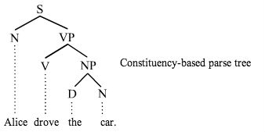

Recursive neural tensor networks (RNTNs) are neural nets useful for natural-language processing. They have a tree structure with a neural net at each node. You can use recursive neural tensor networks for boundary segmentation, to determine which word groups are positive and which are negative. The same applies to sentences as a whole.
Word vectors are used as features and serve as the basis of sequential classification. They are then grouped into subphrases, and the subphrases are combined into a sentence that can be classified by sentiment and other metrics.
Recursive neural tensor networks require external components like Word2vec, which is described below. To analyze text with neural nets, words can be represented as continuous vectors of parameters. Those word vectors contain information not only about the word in question, but about surrounding words; i.e. the word’s context, usage and other semantic information. Although Deeplearning4j implements Word2Vec we currently do not implement recursive neural tensor networks.
The first step toward building a working RNTN is word vectorization, which can be accomplished with an algorithm known as Word2vec. Word2Vec converts a corpus of words into vectors, which can then be thrown into a vector space to measure the cosine distance between them; i.e. their similarity or lack of.
Word2vec is a separate pipeline from NLP. It creates a lookup table that will supply word vectors once you are processing sentences.
Meanwhile, your natural-language-processing pipeline will ingest sentences, tokenize them, and tag the tokens as parts of speech.
To organize sentences, recursive neural tensor networks use constituency parsing, which groups words into larger subphrases within the sentence; e.g. the noun phrase (NP) and the verb phrase (VP). This process relies on machine learning, and allows for additional linguistic observations to be made about those words and phrases. By parsing the sentences, you are structuring them as trees.
The trees are later binarized, which makes the math more convenient. Binarizing a tree means making sure each parent node has two child leaves (see below).
Sentence trees have their a root at the top and leaves at the bottom, a top-down structure that looks like this:

The entire sentence is at the root of the tree (at the top); each individual word is a leaf (at the bottom).
Finally, word vectors can be taken from Word2vec and substituted for the words in your tree. Next, we’ll tackle how to combine those word vectors with neural nets, with code snippets.
Recursive Deep Models for Semantic Compositionality over a Sentiment Treebank; Richard Socher, Alex Perelygin, Jean Y. Wu, Jason Chuang, Christopher D. Manning, Andrew Y. Ng and Christopher Potts; 2013; Stanford University.